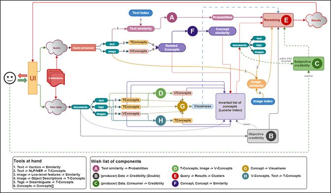
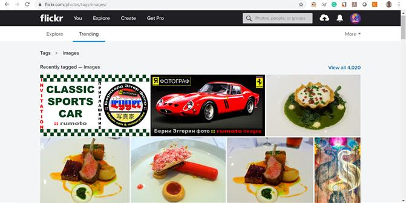
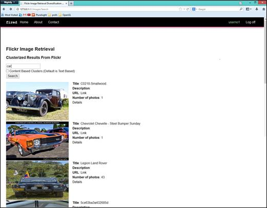
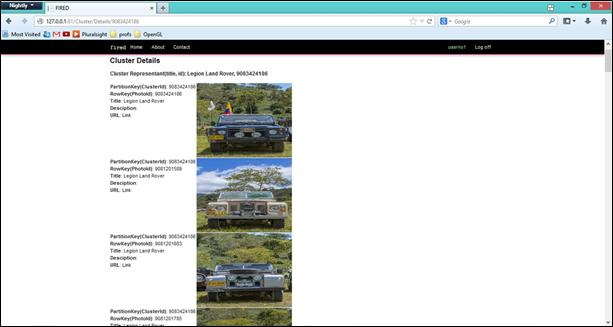

Data publicării: 21.08.2019
Autor articol: Adrian Iftene
Introducere
Ultimii ani au cunoscut o creştere rapidă a colecţiilor de imagini digitale. Cu toate acestea, nu putem accesa şi nici nu putem folosi corespunzător aceste informaţii dacă ele nu sunt organizate astfel încât să putem căuta și regăsi rapid ceea ce dorim. Cele mai folosite tehnici de către motoarele de căutare pentru a atinge acest scop sunt:
- Căutare de fişiere de tip imagine – Motorul de căutare sesizează prezenţa unei imagini prin detectarea tag-urilor specifice <IMG SRC=””/>, în cazul inspectării paginilor web, sau a extensiilor specifice imaginilor, cele mai des întâlnite fiind: .gif (Graphic Image File), .tif (Tagged Image File) şi .jpg (Joint Photographic Experts Group). Internet Graphic Hunter (http://internet-graphic-hunter.en.softonic.com/) este unul dintre motoarele de căutare ce foloseşte această tehnică, şi care, pe baza unui url, returnează toate imaginile prezente la acea adresă.
- Căutarea după cuvinte cheie – Fiecare imagine are asociate metadate (titlu, cuvinte cheie, descriere, etc.) ce includ informaţii privitoare la conţinutul acesteia. Adnotarea imaginilor poate fi realizată manual, de către utilizatori, sau automat cu ajutorul unor algoritmi de învăţare automată, care încearcă să găsească corespondenţa dintre caracteristicile vizuale şi semantica acestora. Numeroase probleme pot apărea în cazul acestei abordări, care rezultă atât din adnotarea greşită sau incompletă a imaginilor, cât şi din nefolosirea cuvintelor potrivite în cazul interogărilor.
- Căutare după titlu – Motorul de căutare poate examina paginile web ale căror titluri indică prezenţa unor imagini corespunzătoare subiectului căutat. Această tehnică poate funcţiona corect în cazul în care titlurile sunt o potrivire corectă pentru conţinutul acestor pagini, lucru ce nu este întotdeauna adevărat. Această metodă poate fi folosită în cazul în care imaginile sunt indexate pe baza titlurilor acestora, aşa cum este şi cazul colecţiei ARTCYCLOPEDIA (http://www.artcyclopedia.com/), care permite găsirea tablourilor căutate prin specificarea unor cuvinte ce se găsesc în titlul acestora.
- Indexare manuală – Există motoare de căutare care angajează personal specializat ce navighează prin paginile web, pentru a găsi şi indexa imaginile prezente. Această muncă este mare consumatoare de timp şi, deşi eficientă, este utilizată doar într-un spaţiu de căutare restrâns. Un exemplu este arhiva de imagini The Library of Congress (http://www.loc.gov/index.html), unde fiecare imagine are asociat un identificator, un titlu şi o descriere pe baza cărora poate fi realizată căutarea.
- Căutare bazată pe conținut – În acest caz, căutarea se realizează pe baza semanticii unei imagini, făcându-se abstracţie de metadatele asociate ei. Acest conținut este format din culori, forme, texturi – practic orice tip de informații care rezultă din imagine în sine. Această metodă este preferată în detrimentul celorlalte prezentate mai sus, întrucât atât căutarea pe baza metadatelor, cât şi adnotarea manuală pot duce la intoxicarea rezultatelor cu imagini care nu au nicio relevanţă pentru interogarea iniţială.
Sistemul pe care l-am construit în MUCKE permite căutarea de imagini într-o colecţie cu peste 90 de milioane de imagini, care a fost construită apelând la principalele platforme ce colectează şi indexează imagini: Google, Bing, Flickr, Picasa, Photobucket, Panoramio, etc. Arhitectura avută în vedere pe perioada derulării proiectului poate fi vizualizată în Figura 1 de mai jos.

Crearea unui corpus cu imagini de pe Flickr
În cadrul proiectului MUCKE am creat un corpus de imagini bazat pe imaginile de pe platforma Flickr. Datele au fost colectate folosind API-u public pus la dispoziție de Flickr și exploatarea a respectat condițiile prevăzute de Flickr Community Guidelines. Natura complexă a obiectivelor proiectului a cerut implicarea a diverselor surse de date multimedia cu scopul de a extrage toate cunoștințele asociate utilizatorului. Cu peste 10 miliarde de poze ce sunt partajate, Flickr este unul din cele mai importante depozite de imagini și a constituit sursa noastră principală de informație vizuală. Un exemplu cu imagini de pe platforma Flickr poate fi văzut în Figura 2.

Membrii consorțiului cu experiență în căutarea și procesarea unor depozite mari de date, au preluat informații (imagini și metadate sub formă de text) pentru mai mult de 1,000,000 de utilizatori Flickr. Datorită faptului că Flickr conține un conglomerat între date personale și date sociale, accentul s-a pus pe cea de-a doua categorie care a fost relevantă pentru sarcinile de extragere a imaginilor. UAIC a coordonat întregul efort de colectare a datelor, dar cu scopul de a crește rapiditatea întregului proces, acesta a fost distribuit între toți partenerii din proiect.
Flickr oferă un sistem de filtrare, ce permite membrilor săi să menționeze atât tipurile de fotografii pe care le-au încărcat, cât și imaginile pe care doresc să le acceseze. Flickr oferă un API complex (http://www.flickr.com/services/api), ce poate fi accesat atât prin REST, cât și prin SOAP, cu o vastă documentație și kituri API pentru fiecare limbaj de programare modern.
Una dintre caracteristicile principale pe care Flickr le prezintă se referă la modul în care organizează imaginile pe care utilizatorii le încarcă. Aceștia au posibilitatea de adăuga etichete pozele lor, ceea ce va permite celorlalți utilizatori să găsească cu ușurință imagini legate de un anumit domeniu. Flickr este una dintre primele aplicații ce au implementat reprezentarea vizuală “tag cloud” și este totodată considerată un bun exemplu de utilizare efectivă a unei folksonomii. Pe lângă etichete, o imagine postată pe Flickr are asociate si alte metadate precum: titlu, autor, data la care a fost făcută poza, data la care a fost încărcată pe Flickr, numărul de vizualizări. Mai există și posibilitatea de a accesa datele EXIF al unor imagini, care se referă la cameră, lumină, diafragmă, focalizare, orientare, spectru de culori.
Flickr oferă găzduire de imagini publice și private, existând posibilitatea de a elibera imagini sub anumite licențe comune de utilizare (http://www.flickr.com/creativecommons) sau de a le eticheta cu “toate drepturile sunt rezervate” (“all rights reserved”). Imaginile pe care le-am descărcat în cadrul proiectului MUCKE erau publice și apar sub licența Creative Commons.
Corpusul MUCKE
Corpusul Mucke conține în jur de 90 de milioane de intrări cu metadate și imagini bazate pe conceptele din Wikipedia, care sunt folosite adesea pentru adnotarea imaginilor din Flickr. Conceptele din Wikipedia sunt ordonate după numărul de imagini Flickr care corespund unui concept, împărțit la numărul de link-uri returnate de Wikipedia, pentru a penaliza conceptele foarte frecvente.
Exemplu de fișier de metadate Flickr
<?xml version="1.0" encoding="utf-8" ?> <rsp stat="ok"> <photos page="1" pages="2" perpage="500" total="896"> <photo id="4912140037" owner="11201698@N00" secret="5789c5046e" server="4079" farm="5" title="Hercule Poirot's Chrismas, Agatha Christie" ispublic="1" isfriend="0" isfamily="0" datetaken="2010-01-15 14:00:20" datetakengranularity="0" tags="collins agathachristie herculepoirot fontanabooks alexisorloff romanspoliciers vintagedetectives vintageagathachristiebookcovers" dateupload="1282383421" views="225" /> <photo id="4570779334" owner="35524174@N04" secret="3bc942575a" server="4050" farm="5" title="Hercule Poirot en attendant l' Express Orient" ispublic="1" isfriend="0" isfamily="0" datetaken="2010-05-01 09:30:32" datetakengranularity="0" tags="man thessaloniki orientexpress shootingpeople θεσσαλονίκη herculepoirotenattendantlexpressorient herculepoirotwaitingtheorientexpress expressorient authenticorientexpresswagon" dateupload="1272796121" views="201" />
Următorii parametri au fost extrași folosind API-ul public de la Flickr:
- photo id – număr unic de înregistrare a imaginii Flickr;
- owner – număr unic de înregistrare al contului Flickr care a încărcat imaginea;
- title – titlul imaginii luat din Flickr;
- datetaken – data de creare a imaginii;
- tags – etichete adăugate de utilizatorul Flickr;
- dateupload – data de încărcare pe Flickr a imaginii;
- views – număr de vizualizări unice ale imaginii.
Mecanismul intern de partajare
Scheletul sistemului a fost creat plecând de la aplicația Lucene (pentru partea de regăsire de documente) (McCandless et al., 2010), combinată cu LIRe (pentru partea de regăsire a imaginii) (Lux și Marques, 2013). LIRe este o bibliotecă open source simplă, dar eficientă, construită peste Lucene, care oferă o modalitate simplă pentru regăsirea de imagini plecând de la conținut. LIRe creează un index Lucene de imagini și oferă mecanismul necesar pentru căutarea în acest index, dar și pentru navigare și filtrarea rezultatelor. Fiind bazat pe un motor integrat de căutare de text, este ușor de integrat în aplicații, fără a fi nevoie de un server de baze de date. Mai mult decât atât, LIRe poate fi folosit pentru până la ordinul milioanelor de imagini datorită modului de indexare aproximativ cu tabele hash.
LIRe este construit pe baza aplicației Lucene, un motor de căutare text de tip open source. Ca și în procesul de text retrieval, imaginile trebuie mai întâi indexate pentru a putea fi regăsite mai târziu. Documente formate din câmpuri, ce au nume și valoare, sunt organizate sub forma unui index care este, în mod obișnuit, stocat în sistemul de fișiere.
Sistemul a fost proiectat pe baza unei arhitecturi modulare, care va permite integrarea dinamică de noi tehnici și algoritmi pentru a obține rezultate mai bune pe viitor.
Extracția de proprietăți vizuale și indexarea
Folosind LIRe, se pot extrage, indexa și căuta următoarele proprietăți ale imaginilor raster:
- Histograme de culori în spațiile RGB (Red-Green-Blue) și HSV (Hue-Saturation-Value). Aceste histograme sunt o reprezentație a distribuției culorilor într-o imagine;
- Descriptorii MPEG-7 scalable colour (culoare scalabilă), colour layout (schema culorilor) și edge histogram (histograma marginilor). MPEG-7 include instrumente standardizate (descriptori, scheme de descriere și limbaje) care permit descrieri structurale și detaliate ale informațiilor audio-video;
- Proprietățile Tamura pentru asprime, contrast și direcționalitate. Șase proprietăți texturale de bază au fost aproximate în formă computațională – asprime, contrast, direcționalitate, asemănare cu linie, regularitate și rugozitate. Primele trei dintre acestea sunt disponibile în LIRe;
- Colour and edge directivity descriptor (CEDD) – Descriptorul pentru culoare și directivitatea marginilor. Această proprietate încorporează informații despre culoare și textură și este limitată la 54 de octeți per imagine.
- Fuzzy color and texture histogram (FCTH) – Histograma fuzzy a culorilor și a texturii. Această proprietate combină, de asemenea, informații despre culoare și textură într-o singură histogramă. Este rezultatul combinării a trei sisteme fuzzy și este limitată la 72 de octeți per imagine;
- Joint Composite Descriptor (JCD) – Descriptorul compozit comun. Unul dintre descriptorii compoziți compacți pentru descrieri vizuale, JCD a fost proiectat pentru imagini în culori naturale și rezulta din combinația CEDD și FCTH;
- Auto colour correlation feature – Proprietatea pentru corelare automată a culorilor. Această caracteristică distilează corelarea spațială a culorilor și este atât eficientă cât și necostisitoare pentru regăsirea de imagini pe bază de conținut.
Pentru a crea un index și a efectua căutări pe conținutul său, trebuie urmați acești pași:
- Pentru fiecare imagine din colecție, este creat un document. Acesta poate conține atât câmpuri textuale, cât și caracteristici vizuale pentru imagini (dintre cele menționate mai sus). Mai târziu, acest document este adăugat în index;
- Pentru a realiza căutări trebuie creat mai întâi un document de tip query (interogare). Acest document trebuie să conțină câmpurile necesare căutării (textuale sau vizuale) – cu alte cuvinte, criteriile de căutare.
Rezultatul căutării folosind această interogare este o listă de documente cu scoruri atașate, în ordine descrescătoare (1 este cel mai bun scor, iar 0 cel mai prost). Aceste scoruri ilustrează gradul de potrivire între un document din index și interogare, pe baza criteriilor de căutare specificate. Procesul de căutare nu trebuie să se oprească aici – mulțimea rezultatelor poate fi filtrată mai departe folosind alte criterii.
Procesarea textuală și a metadatelor
Regăsirea de imagini pe baza metadatelor asociate a fost folosită pe scară largă în ultimii ani, datorită simplității și costului de calcul scăzut. Imaginile sunt adnotate automat sau manual prin cuvinte-cheie care sunt stocate în baze de date pentru a permite accesul viitor la imagini.
Corpusul Flickr oferă un set de metadate asociate fiecărei imagini, care conțin informații referitoare la resursa respectivă. Cele mai importante date oferite de Flickr sunt câmpurile referitoare la proprietar, titlu, date calendaristice importante (upload sau creare), localizare (coordonate GPS), etichetele asociate imaginii de către utilizator. Aceste câmpuri stochează date primite de la utilizator (etichete, titlu) sau informații identificate automat (locația GPS, date calendaristice) și reprezintă o componentă cheie în sarcina de regăsire a imaginilor. Toate aceste metadate sunt procesate în mod textual. În prima etapă, se face rezoluția anaforei și regăsire de documente folosind Lucene. În a doua etapă, se intenționează a se folosi procesare semantică, recunoașterea entităților cu nume etc.
Totuși, adnotările textuale de cele mai multe ori oferă informații puține despre caracteristicile vizuale ale imaginii și sunt de obicei asociate cu subiectivitatea, ambiguitatea și imprecizia create de specificarea contextului imaginii. Acest lucru conduce la necesitatea integrării atât a descrierilor de conținut, cât și a metadatelor pentru un management eficient al informațiilor despre imagini.
Scheletul prototipului
În continuare vor fi descriși pașii principali realizați în cadrul prototipului pentru mecanismul intern de partajare:
- Utilizatorul introduce interogarea: modul de interogare pe bază de cuvinte-cheie (textual sau pe baza conținutului);
- Serverul primește cuvintele cheie și caută în baza de date NoSQL dacă există tabele care le conțin:
- Dacă da, baza de date este interogată și se sare la pasul 6;
- Dacă nu, cuvântul-cheie este adăugat în baza de date SQL în tabelele Keyword și UserKeyword;
- Serverul face o cerere la API-ul Flickr și primește o colecție de fișiere cu metadate;
- Este aplicat un mecanism de clusterizare dependent de rezultatele interogării de la pasul 1;
- Rezultatele sunt salvate în baza de date NoSQL astfel:
- Este realizat un rezumat hash al cuvântului-cheie – HashValue;
- Este creat un tabel cu numele cb[HashValue] sau tb[HashValue], în funcție de interogare (cb = pe bază de conținut, tb = pe bază de text);
- Cluster-ele, împreună cu metadatele, sunt salvate în tabel. PartitionKey reprezintă ID-ul clusterului, iar RowKey reprezintă ID-ul imaginii.
- Rezultatele sunt transmise la client spre a fi afișate.
Colecția noastră este o colecție de imagini Flickr. În prototip, o pagină de căutare permite introducerea cuvintelor cheie pentru fiecare proces (Figura 3). Mai întâi, cuvintele cheie sunt căutate în titlurile și descrierile imaginilor. Apoi, pe baza conținutului imaginilor, este creat un cluster de imagini similare (vezi Figura 3).

Clustering bazat pe conținut – În Figura 4 se poate vizualiza un grup din căutarea de mai sus.

Principalul avantaj al acestei arhitecturi este modularitatea, făcând posibilă adăugarea de noi componente pentru procesarea de imagini sau text în orice moment, pentru a îmbunătăți rezultatele căutării. De asemenea, rezultatele pot fi vizualizate în forme diferite, conform necesităților utilizatorului. În continuare intenționăm să adăugăm mai multe componente acestei arhitecturi și să adresăm pe viitor componenta de credibilitate în procesul de căutare (Gînscă et al., 2015).
Exploatarea informațiilor din cadrul rețelelor sociale pentru a îmbunătăți calitatea căutărilor de imagini
Pentru a îmbunătăți calitatea căutărilor e nevoie de corpusuri adnotate cu ajutorul adnotatorilor umani, care mai apoi să fie folosite în procesul de căutare. Crearea acestor corpusuri este de cele mai multe ori o operație costisitoare (ca timp în primul rând, dar și din punct de vedere financiar). Din aceste motive, folosirea informațiilor existente în rețelele sociale, unde utilizatorii contribuie voluntar la adnotarea de imagini (prin adăugare de comentarii, prin adăugare de emoticons, etc.), a devenit din ce în ce mai utilizată în ultimul timp.
Pe deoparte social media poate fi folosită pentru a adăuga etichete noi imaginilor din comentariile asociate acestora, elemente ce pot fi folosite mai apoi la clasificarea și căutarea acestora (McAuley și Leskovec, 2012). Pe de altă parte se poate îmbunătăți calitatea unei componente ce identifică imagini ce rănesc sentimente religioase, politice, sau care instigă la violență, prin mărirea automată a resurselor folosite de aceasta (Goel et al., 2016).
Deoarece într-o rețea socială se înregistrează toate activitățile utilizatorului (postări, comentarii, like-uri, etc.) se poate crea un profil pentru acesta, care poate fi folosit cu succes mai apoi în momentul în care acesta face căutări (Ntalianis și Doulamis, 2017). Rezultatele pot fi filtrate suplimentar în funcție de acest profil, oferind astfel rezultate personalizate și prin urmare mai relevante pentru acesta.
Interesant este faptul cum pe baza imaginilor și a comentariilor asociate acestora pe Instagram se poate determina starea de sănătate a populației dintr-o anumită zonă geografică (Garimella et al., 2017).
Participarea în campanii de evaluare
Algoritmii au fost deja testați în campaniile de evaluare CLEF, precum ImageCLEF (PlantIdentification) și QA4MRE.
Grupul UAIC a fost implicat în 2013 în task-ul Plant Identification la CLEF, unde a fost clasificat pe locul 5 din 12 grupuri participante (Șerban et al., 2013), apoi în 2015 și în 2016 în task-ul adnotare imaginilor cu concepte (Scalable Concept Image Annotation Challenge) (Calfa et al., 2015), (Cristea et al, 2016). Multe părți din acest sistem au fost utilizate în arhitectura sistemului ce a fost dezvoltat în MUCKE. De asemenea, grupul UAIC a participat în task-ul QA4MRE la CLEF (Iftene et al., 2013).
Concluzii
În acest articol am văzut în prima parte detalii legate de corpusul obținut în cadrul proiectului MUCKE. În partea a doua am descris modul în care se face partajarea internă a informațiilor din acest corpus. Aici găsim scheletul sistemului ce se constituie prototip al mecanismului de partajare. Tot aici avem prezentat modul în care algoritmii noștri au fost testați în campanii de evaluare relevante precum CLEF.
În partea de final am prezentat cum rețelele sociale pot fi folosite pentru a îmbunătăți rezultatele sistemelor ce fac căutare de imagini.
Referințe bibliografice
- Bender, B. (2017) Social media and politics: the 2016 US presidential election. BrandBa.Se http://www.brandba.se/blog/social-media-and-politics-2016-election
- Bierig, R., Șerban, C., Sirițeanu, A., Lupu, M., Hanbury, A. (2014) A System Framework for Concept- and Credibility-Based Multimedia Retrieval. In ICMR ’14 Proceedings of International Conference on Multimedia Retrieval, pp. 543-550, Glasgow, Scotland, April 2014.
- Calfa, A., Silion, D., Bursuc, A. C., Acatrinei, C. P., Lupu, R. I., Cozma, A. E., Pădurariu, C., Iftene, A. (2015) Using Textual and Visual Processing in Scalable Concept Image Annotation Challenge. In Working Notes of CLEF 2015 – Conference and Labs of the Evaluation forum – ImageCLEF2015. Vol. 1391, ISSN 1613-0073. 8-11 September 2015, Toulouse, France.
- Cristea, A.G., Savoaia, M.M., Martac, M.A., Pătraș, I.C., Scutaru, A.O. Covrig, C.E., Iftene, A. (2016) Using Machine Learning Techniques, Textual and Visual Processing in Scalable Concept Image Annotation Challenge. In Working Notes of CLEF 2016 – Conference and Labs of the Evaluation forum – ImageCLEF2016. 5-8 September 2016, Evora, Portugal.
- Garimella, K., Alfayad, A., Weber, I. (2017) Social Media Image Analysis for Public Health. In CHI 2016, Social Media and Health, pp. 5543-5547, San Jose, CA, USA
- Gînscă, A. L., Popescu, A., Lupu, M., Iftene, A., Kanellos, I. (2015) Evaluating User Image Tagging Credibility. Experimental IR meets Multilinguality, Multimodality, and Interaction. Lecture Notes in Computer Science, Vol. 9283, Pp. 41-52. ISSN 0302-9743, ISBN 978-3-319-24026-8. Publisher Springer International Publishing. In Proceedings of the 6th International Conference of the CLEF Association, CLEF’15 Toulouse, France, September 8-11, 2015.
- Goel, S., Sachdeva, N., Kumaraguru, P., Subramanyam, A. V., Gupta, D. (2016) PicHunt: Social Media Image Retrieval for Improved Law Enforcement. In: Spiro E., Ahn YY. (eds) Social Informatics. SocInfo 2016. Lecture Notes in Computer Science, vol. 10046, pp. 206-223. Springer, Cham.
- Iftene, A. Moruz, A., Ignat, E. (2013) Using Anaphora resolution in a Question Answering system for Machine Reading Evaluation. Notebook Paper for the CLEF 2013 LABs Workshop – QA4MRE, 23-26 September, Valencia, Spain.
- Lux, M., Marques, O. (2013) Visual Information Retrieval using Java and LIRE. Synthesis Lectures on Information Concepts, Retrieval, and Services, January 2013, 112 pages, http://doi.org/10.2200/S00468ED1V01Y201301ICR025
- McAuley, J., Leskovec, J. (2012) Image Labeling on a Network: Using Social-Network Metadata for Image Classification. In: Fitzgibbon A., Lazebnik S., Perona P., Sato Y., Schmid C. (eds) Computer Vision – ECCV 2012. ECCV 2012. Lecture Notes in Computer Science, vol. 757, pp. 828-841. Springer, Berlin, Heidelberg.
- McCandless, M., Hatcher, E., Gospodnetić, O. (2010) Lucene in Action, Second Edition. Manning. ISBN 1933988177
- Ntalianis, K., Doulamis, A. (2017) Personalized Image Retrieval in Social Media based on an Optimal Relevance Feedback Algorithm. In Recent Techniques in Educational Science. pp. 109-114.
- Șerban, C., Sirițeanu, A., Gheorghiu, C., Iftene, A., Alboaie, L., Breabăn, M. (2013) Combining image retrieval, metadata processing and naive Bayes classification at Plant Identification 2013. Notebook Paper for the CLEF 2013 LABs Workshop – ImageCLEF – Plant Identification, 23-26 September, Valencia, Spain.